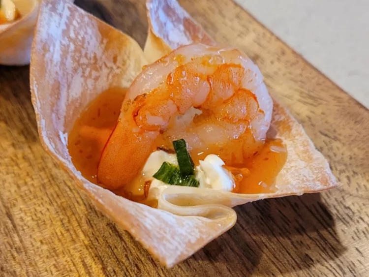

Odint Recipes

Thai Shrimp Wonton Cups
These wonton cups will be the talk of your next party! They only use 8 ingredients, including sweet Thai chili sauce, shrimp, and cream cheese. They turn out tasty and fancy.
Ingredients
- 24 wonton wrappers
- 1 ½ tablespoons olive oil
- 1 clove garlic, minced
- 1 teaspoon grated fresh ginger
- 8 ounces frozen medium shrimp - thawed, shelled, and deveined
- ½ lime
- 7 ½ ounces chive-and-onion cream cheese spread
- ¼ cup Thai sweet chili sauce
- 1 green onion, chopped
Directions
- Preheat the oven to 350 degrees F (175 degrees C). Spray a 24-cup mini muffin tin with cooking spray.
- Gently press a wonton wrapper into the bottom and up the sides of each prepared muffin cup.
- Bake in the preheated oven for 10 minutes. Remove from the oven and let cool in the pans.
- Heat olive oil over medium heat in a large skillet. Add garlic, ginger, and shrimp. Cook until shrimp is pink on both sides, 5 to 7 minutes.
- Squeeze lime half into cream cheese in a bowl; stir to combine. Divide mixture evenly among cooled wonton cups, about 1 teaspoon each.
- Top cream cheese mixture with 1/2 teaspoon Thai sweet chili sauce and one shrimp; sprinkle with chopped green onion.